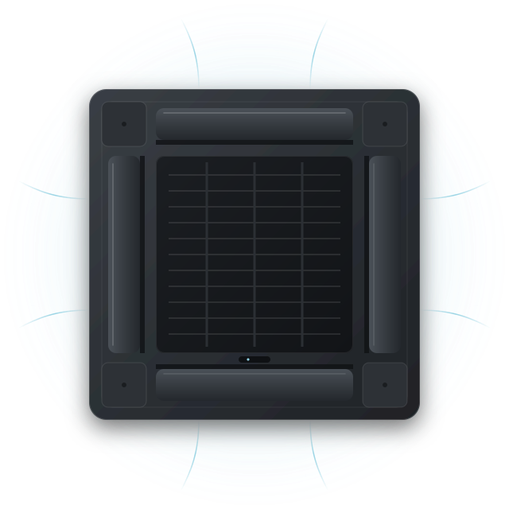

店舗・オフィスのエアコンクリーニング全国対応
見えない場所ほど、 丁寧に。
真 −SHIN− は、店舗・オフィスなど法人のお客様の業務用エアコンを清掃する専門会社です。 機器の内側に向き合う仕事だからこそ、事前の確認と現場への配慮を省かず、担当者の方が社内で説明できる形でご提案します。
- 法人のお客様向け
- 全国からのご相談に対応
- 機種・台数が不明でも相談可
料金・出張条件・作業可能な時間帯は、設備と現場の状況を伺ったうえで個別にご案内します。

イメージ図（イラスト）
01 Concerns
担当者の方から、
よく伺うこと。
店舗やオフィスの空調は、止めにくく、見えにくく、誰が面倒を見るのか決まっていないことも多い設備です。こんな場面でご相談いただいています。
-
01
吹出口の黒ずみや、送風時のニオイが気になる。お客様に指摘される前に手を打ちたい。
客席・受付・会議室など、人が長く過ごす場所から優先順位を一緒に考えます。
-
02
「効きが悪い」「電気代が上がった」と現場から声が上がっている。
汚れ以外の原因も考えられるため、状況を伺ったうえで清掃で対応できる範囲をご説明します。
-
03
複数の店舗・拠点をまとめて手配したい。窓口は一つにしたい。
拠点ごとの機種・台数・条件を一覧に整理し、日程を調整しながら進めます。
-
04
営業時間中は作業ができない。閉店後や休業日に合わせてほしい。
営業への影響を抑える時間帯のご希望を伺い、対応できる条件をご相談時に確認します。
-
05
機種も台数も正確には分からない。何を伝えれば見積もりが取れるのか知りたい。
分かる範囲で構いません。見積もりに必要な情報をチェックリストにまとめています。
-
06
稟議のために、作業内容と費用の考え方を説明できる資料がほしい。
お見積もりは、内訳と作業範囲が分かる形でお出しするよう努めます。このページは印刷して社内共有にもお使いいただけます。
どのご相談も、まず状況を伺うところから始めます。
分からないことは、分からないままお知らせください。
02 Service
対象となる設備と、
作業の内容。
業務用エアコンの室内機を中心に、機器の内部に入り込んだホコリやカビなどの汚れを、分解して洗浄します。下記は代表的な形状です。ご相談の際、この中から近いものをお知らせいただくと、話が早く進みます。
-
Ceiling cassette
天井埋込カセット形
天井に埋め込まれ、化粧パネルだけが見えるタイプ。4方向・2方向・1方向吹出しなどがあり、店舗・オフィスで最も多く見かけます。
対応可否・作業範囲は機種と設置状況により確認
-
Ceiling suspended
天井吊形
天井から吊り下げて設置される横長のタイプ。天井裏にスペースがない店舗や、工場・倉庫の事務所などで見られます。
対応可否・作業範囲は機種と設置状況により確認
-
Wall mounted
壁掛形
壁面に取り付けるタイプ。事務所、バックヤード、小規模店舗などで使われます。業務用・家庭用の両方があります。
対応可否・作業範囲は機種と設置状況により確認
-
Floor standing
床置形
床に据え置くタイプ。天井の高い空間や、設置の自由度が必要な場所で見られます。
対応可否・作業範囲は機種と設置状況により確認
-
Concealed duct
天井埋込ダクト形
本体を天井裏に隠し、吹出口・吸込口だけが見えるタイプ。設計性の高い店舗やホテルなどで使われます。
対応可否・作業範囲は機種と設置状況により確認
- 上記以外の形状、室外機、お掃除機能付き機種、フィルター自動清掃ユニット、ダクト内部などについては、ご相談時に対応できる範囲を確認します。
- 現在、料金表は掲載していません。費用は機種・台数・設置状況・場所・ご希望の時間帯により異なるため、お見積もりでご案内します。
- このページのイラストはイメージ図です。実際の施工写真ではありません。
What we do
エアコンクリーニングで行う、
一般的な作業の流れ。
機種や現場によって手順と範囲は変わります。作業当日に何が起きるのかを、担当者の方が社内に説明しやすいよう、基本の形を示しています。
-
確認と養生
機器の状態と周囲を確認し、床・什器・機材を養生シートで保護します。作業導線と水場・電源の使用についても確認します。
-
分解
化粧パネル、フィルター、ファン、ドレンパンなど、機種に応じて取り外せる部品を外します。取り外しの範囲は機種により異なります。
-
洗浄
本体内部の熱交換器（アルミフィン）や送風ファンを洗浄し、取り外した部品は別途洗います。使用する洗浄方法・洗剤は機種と汚れの状態に合わせます。
-
組み立てと動作確認
部品を戻し、送風・運転の状態を確認します。作業前の状態との違いを、担当者の方にご確認いただきます。
-
片付けとご報告
養生を撤去し、作業内容をご説明します。報告書の形式など、社内共有に必要なものはご相談時に調整します。
03 Approach
「真」の字を、
仕事の基準にしています。
見えない場所を扱う仕事は、信じてもらうしかない部分があります。だからこそ、確認・配慮・報告を省きません。
-
01
事前の確認を、省かない。
作業当日に「できない」「想定と違う」が起きないよう、機種・設置状況・現場の条件を前もって確認します。
- 機種・台数・設置高さ・天井の構造
- 作業スペース、搬入経路、駐車
- 使える電源と水場、排水の経路
- 作業可能な時間帯と、立ち会いの方
-
02
現場を汚さず、止めすぎない。
お店やオフィスには、日々の仕事があります。什器や床を守り、営業・業務への影響を最小限にする進め方を一緒に考えます。
- 作業範囲の養生と、機材の置き場所の相談
- 作業順序の工夫で、使える機器を残す
- 作業中に使えない設備を事前にお伝えする
-
03
担当者の方が、説明できる形で。
ご相談の相手は、社内で説明責任を負う方です。お見積もりの内訳、作業範囲、当日の内容を、そのまま社内に回せる形で揃えます。
- 作業範囲と内訳が分かるお見積もり
- 作業後の内容説明。報告書の形式は要相談
- 次回の目安など、保全計画の材料をご提供
安さで選ばれるより、
「任せてよかった」と
次も呼ばれる会社でありたい。
実績件数やお客様の声は、公開できる形が整い次第、このページに掲載します。現時点では、確認が取れていない数字や評価は載せていません。
04 Process
ご相談から作業まで。
お見積もりの内容にご納得いただいてから、日程を決めます。問い合わせの時点で、作業が確定することはありません。
-
ご相談
お客様フォームから、分かる範囲の情報と気になっていることをお送りください。
-
内容の確認
真 −SHIN−機種・台数・設置状況を確認し、必要に応じて写真や現地確認をお願いすることがあります。
-
お見積もり
真 −SHIN−作業範囲と内訳を明記したお見積もりをお出しします。社内でご検討ください。
-
日程の調整
双方ご承諾後、営業・業務の予定に合わせて作業日と時間帯を調整します。
-
作業・完了確認
双方養生・分解・洗浄・組み立てを行い、動作と仕上がりをご確認いただいて完了です。
05 For your estimate
見積もりのために、
ご確認いただきたいこと。
すべて埋める必要はありません。分かる項目にチェックを入れ、コピーして社内の確認やご相談にお使いください。分からない項目は、ご相談時に一緒に確認します。
設備について
Equipment現場について
Siteご希望について
Preferences06 Service area
全国からのご相談に対応します。
本社・拠点の所在地は確認中です。複数の地域にまたがる拠点のご相談も、窓口は一つで承ります。
全国Nationwide
北海道・東北
北海道、青森、岩手、宮城、秋田、山形、福島
関東
茨城、栃木、群馬、埼玉、千葉、東京、神奈川
中部
新潟、富山、石川、福井、山梨、長野、岐阜、静岡、愛知
近畿
三重、滋賀、京都、大阪、兵庫、奈良、和歌山
中国・四国
鳥取、島根、岡山、広島、山口、徳島、香川、愛媛、高知
九州・沖縄
福岡、佐賀、長崎、熊本、大分、宮崎、鹿児島、沖縄
出張に伴う費用、日程、離島・山間部などの条件は、場所と内容を伺ったうえで個別にご案内します。
07 FAQ
よくあるご質問
Q機種や台数が分からなくても相談できますか。
できます。分かる範囲の情報と、気になっていることをお知らせください。室内機の全体、吹出口、本体やリモコンのラベル（型番）の写真があると、確認が早く進みます。
Q営業時間外（夜間・早朝・休業日）の作業はお願いできますか。
営業への影響を抑える時間帯のご希望は、必ず伺います。対応できる時間帯や条件は、場所・内容・時期によって異なるため、ご相談時に確認してご案内します。
Q見積もりまで、どのくらいの時間がかかりますか。
内容によって異なります。機種・台数・設置状況・所在地が揃っているほど早くお出しできます。現地確認が必要な場合は、その日程も含めてご案内します。
Q複数の店舗・拠点をまとめて依頼できますか。
はい。窓口を一つにして、拠点ごとの機種・台数・条件を一覧に整理したうえで、日程を調整します。拠点が離れている場合の進め方は、ご相談時にご提案します。
Q作業中、店舗やオフィスは使えますか。
作業対象のエアコンは停止し、その周辺は養生と作業スペースのため使えなくなります。他の範囲の使用可否は、レイアウトと作業順序によって変わるため、事前にご説明します。
Q費用はどのように決まりますか。
機種（形状）、台数、設置状況（高さ・分解の範囲）、所在地、ご希望の時間帯などから算出します。現在、料金表は掲載していません。お見積もりでは、作業範囲と内訳が分かる形でご案内します。
Q請求書払いなど、法人向けの支払い・契約には対応していますか。
お支払い方法、契約形態、見積書・請求書の宛名や形式については、ご相談時にご案内します。社内の決裁に必要な書類があれば、あらかじめお知らせください。
Q清掃をすれば、ニオイや効きの悪さは必ず改善しますか。
内部の汚れが原因であれば、清掃で改善が期待できます。ただし、機器の故障や冷媒・設置環境など、清掃では解決しない原因もあります。状況を伺ったうえで、清掃で対応できる範囲をご説明します。
08 Company
会社概要
SHIN
「真」は、まっすぐであること、偽りがないこと。見えない場所を扱う仕事だからこそ、この一字を社名にしています。
| 社名 | 真 −SHIN− |
|---|---|
| 事業内容 | エアコンクリーニング（店舗・オフィスなど法人のお客様向け） |
| 対応エリア | 全国（出張条件は個別にご案内） |
| 所在地 | 確認中（公開情報が確定次第、掲載します） |
| 代表者 | 確認中 |
| 設立 | 確認中 |
| 電話 | 確認中（現在はフォームからご相談ください） |
| メール | 確認中 |
| 受付時間 | 確認中 |
| 資格・保険 | 確認中（保有資格・加入保険は確認後に掲載します） |
点線のマークが付いた項目は、公開情報の確認後に差し替える予定の項目です。
Contact
分かることだけで、
まずはご相談ください。
お問い合わせの時点で作業が確定することはありません。お見積もりの内容を社内でご確認いただいてから、日程を決めます。